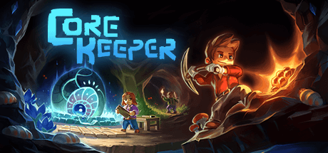

What is Core Keeper?
Core Keeper is a top down game strutured on adventure, building, and automation. The game is strutured around you and your freinds being trapped deep underground, after touching a gem in a forest. You wake up in this small cave, and from their on you mine walls, craft tools, and build up your base. You can explore the differnt bioms, unlock new gear, and slowly progress until your the best. Their are hundrends of differnt combinations of aumor you can use, leading to endless playstyles.
Core Keeper can be played with up to 6 freinds all online at once. There are many things to explore and find with your freinds, along with over 6+ bosses you can fight together. Work together to mine resources, fight, farm, craft and survive. It's like combining Terraria and Minecaft, then adding a pixel art and a top down perspective.